Youth Character Summit 2026
Selamat Datang di YCS 2026!
Bersama, kita wujudkan generasi muda berkarakter, berprestasi, dan berdampak.
Mulai JelajahiYouth Character Summit 2026
Bersama, kita wujudkan generasi muda berkarakter, berprestasi, dan berdampak.
Mulai Jelajahi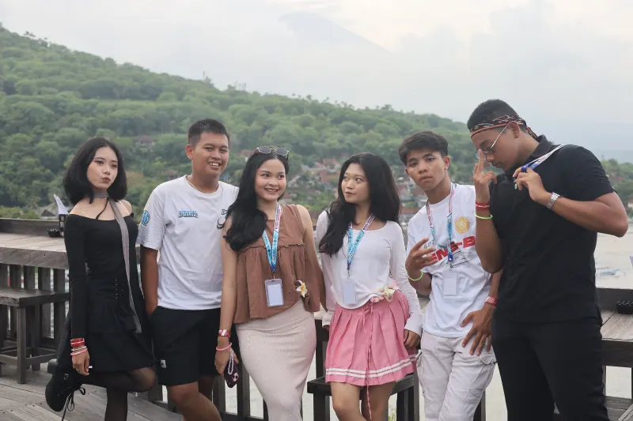
Pengumuman resmi
Segera diumumkan
Pelajar terpilih melangkah ke Bali. Cari namamu atau teman sekolahmu.
Pengumuman Senin, 16 November 2026 · 19.00 WIB.
Lihat finalis Hitung mundur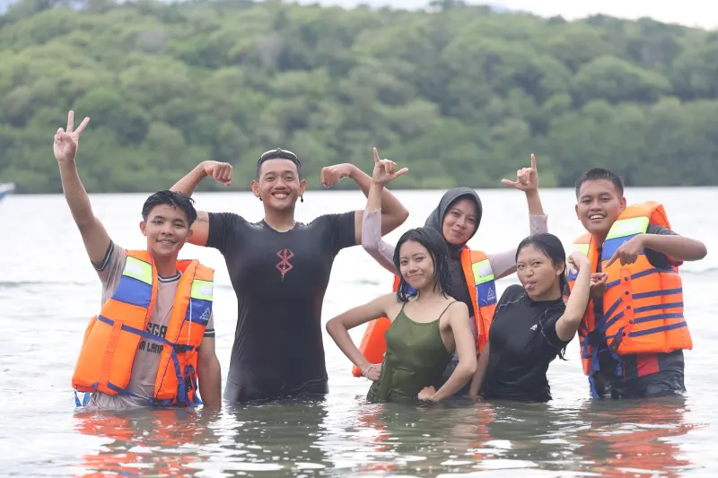
Live & Dana Kaget
Kode Dana Kaget dibagikan saat live dan di saluran WhatsApp YCS.
Lihat jadwalInformasi Acara
23 Des –
2 Jan 2027
Bali, Indonesia
Menuju YCS 2026
Rabu, 23 Desember 2026 · 08.00 WIB
Terima kasih sudah menjadi bagian dari Youth Character Summit 2026!
Menuju pengumuman finalis
Senin, 16 November 2026 · 19.00 WIB
Pengumuman 100 finalis pada Senin, 16 November 2026 pukul 19.00 WIB.
Kampanye utama#SatuKataUntukIndonesia
Satu orang, satu kata. Kirim satu kata harapanmu dan hiduplah sebagai warga festival bersama ribuan pelajar se-Indonesia.
0 warga festival
Gabung dulu untuk masuk plaza
Lawan Raja Batu sebelum live, dapat kode undian, lalu diundi saat live.
0/8
HP sudah dibawa pulangBelum ada pemenang. 8 HP menunggu pemiliknya. Kamu bisa jadi yang pertama!
*Gambar HP hanya ilustrasi
Belum ada siaran di kategori ini.
Semua siaran di YouTubeSatu orang, satu klaim
Amankan Dana Kaget sebelum kuota habis
Memeriksa status Dana Kaget…
Form akan dibuka saat panitia mengumumkannya lewat live dan saluran WhatsApp YCS. Simpan halaman ini, ya!
Ikuti saluran WhatsApp YCSKuota Dana Kaget kali ini sudah terpenuhi. Terima kasih sudah antusias! Pantau live YCS berikutnya, siapa tahu ada kesempatan lagi.
Lihat jadwal livePanitia akan menghubungimu lewat email. Pastikan emailmu aktif.
Sekalian kirim Satu Kata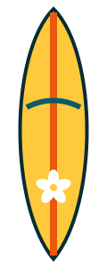
Setiap kata yang dikirim dan setiap klaim menambah langkah kita. Semakin banyak yang ikut, semakin dekat ke Bali!
–dukungan terkumpul
Menuju 100 dukunganTarget akhir 100.000
Rute 11 hari, berangkat dari Universitas STEKOM Semarang:

Probolinggo
Snorkeling edukatif: ekosistem laut dan dampak perubahan iklim.

Teluk Banyuwedang
Melatih kemandirian, kerja sama, dan kepedulian lingkungan.

Buleleng
Belajar geografi dan adaptasi flora pesisir.

Bali
Mendaki hutan hujan tropis, belajar keanekaragaman hayati.

Bedugul
Sistem Subak dan cermin toleransi beragama.

SLBN Buleleng
Berinteraksi setara bersama teman-teman disabilitas.

GWK, Bali
Merayakan pergantian tahun 2027 bersama.
Provinsi dengan dukungan terbanyak. Kirim Satu Kata dan pilih provinsimu!
Daftar finalis dirilis serentak saat pengumuman. Server baru membuka datanya tepat waktu, jadi semua orang tahu di detik yang sama.
Senin, 16 November 2026 · 19.00 WIB
Ini dokumentasi rombongan tahun lalu: 11 hari keliling Jawa Timur dan Bali bareng pelajar dari berbagai daerah. Tahun ini giliranmu.
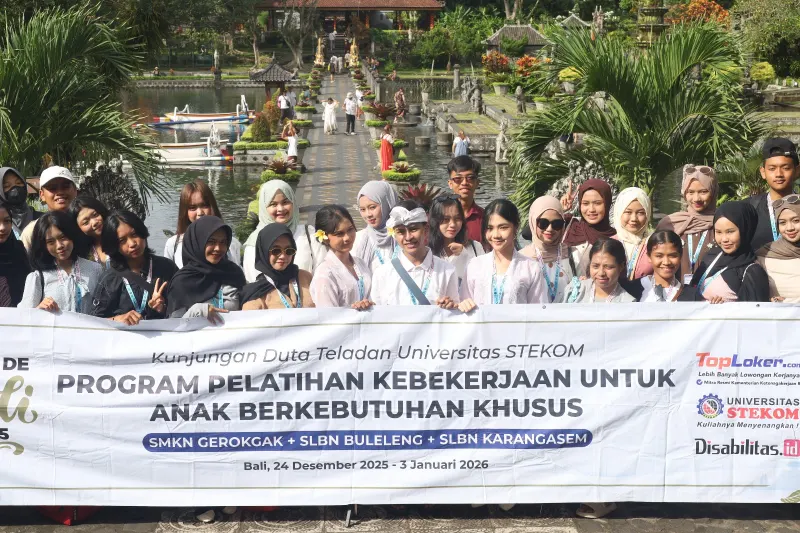
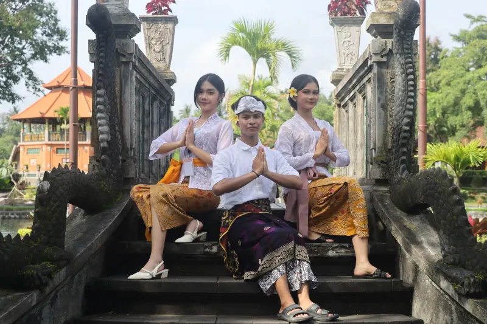
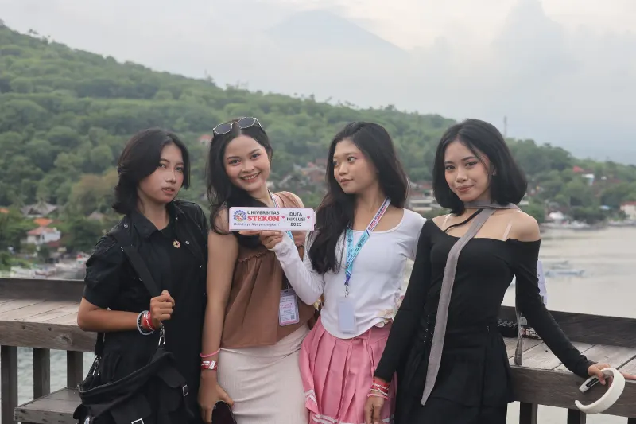
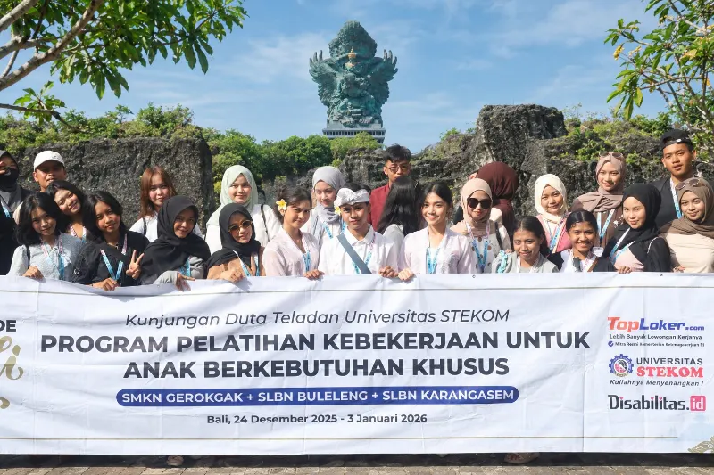
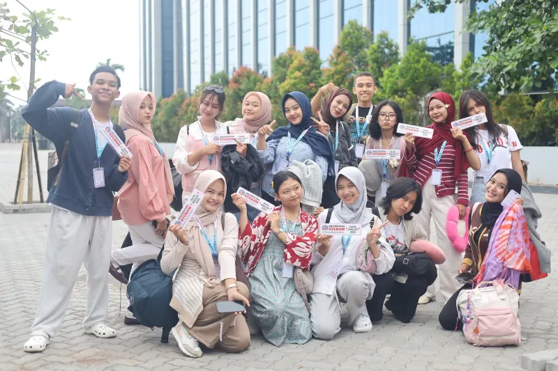
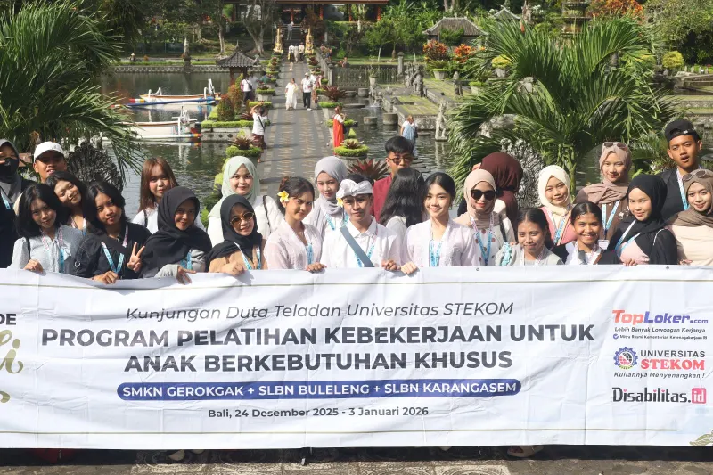
Pesona Bali
Pura di atas danau, gapura candi bentar, tarian sakral, sampai sawah subak. Inilah wajah Bali yang jadi latar perjalanan karakter YCS 2026.
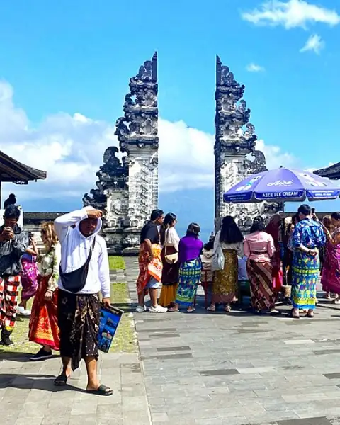
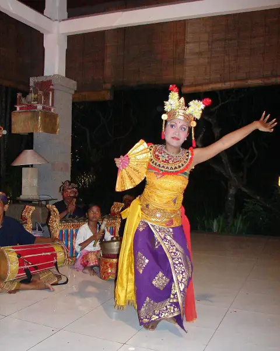
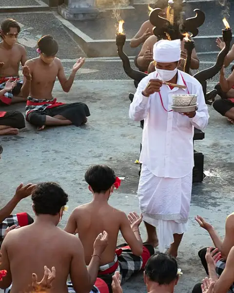
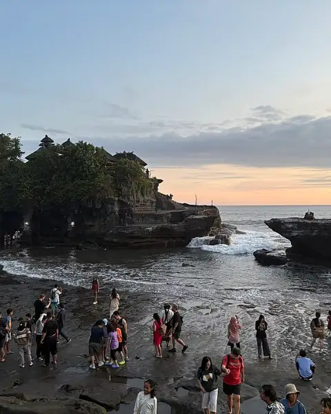
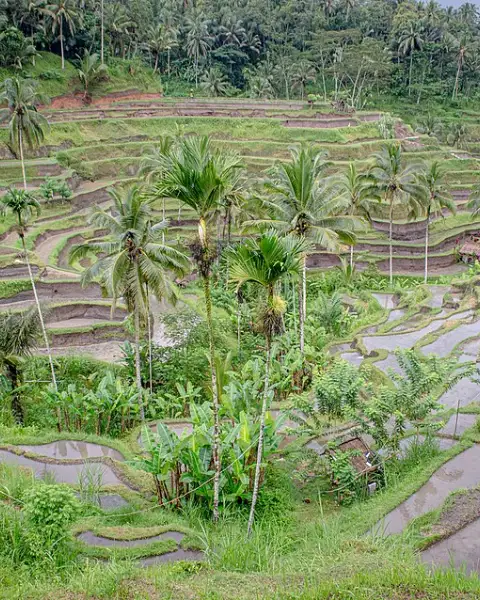
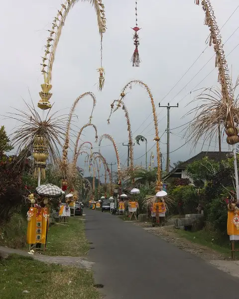
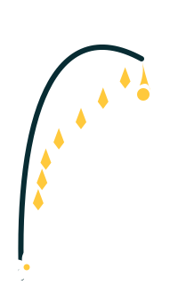
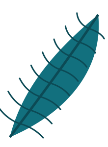
Masih bingung?
YCS 2026 adalah program pengembangan karakter untuk pelajar SMA/SMK/MA: kegiatan edukatif, kepemimpinan, kreativitas, dan bakti sosial bersama teman-teman disabilitas.
Ya. Program ini 100% gratis untuk 150 pelajar terpilih se-Indonesia, termasuk perjalanan dari titik kumpul Semarang, kegiatan, dan seluruh rangkaian acara di Bali.
Ada dua jalur: 50 peserta lewat Golden Buzzer yang dipilih langsung oleh panitia/juri, dan 100 peserta lewat seleksi umum (vote, Twibbon & video kampanye #AksiBaik, tes kuesioner via Zoom, lalu penjurian).
Ada. Setelah pengumuman, peserta yang belum masuk finalis menerima kode wildcard lewat email. Aktifkan di halaman Klaim Tiket untuk mendapat prioritas di event YCS berikutnya (bukan jaminan lolos).
YCS Squad adalah komunitas pendukung: teman, guru, keluarga, dan siapa pun yang ingin ikut menyebarkan semangat YCS 2026. Anggota Squad mendapat info live lebih dulu. Untuk mendukung gerakan ini, cukup kirim Satu Kata dan ikuti saluran WhatsApp resmi.
Seluruh semi finalis mendapat beasiswa Rp3.000.000 dan seluruh finalis mendapat beasiswa Rp5.000.000. Peserta berprestasi juga berpeluang mendapat beasiswa lanjutan.
Rombongan berangkat bersama dari Universitas STEKOM Kampus Pusat, Jl. Majapahit 605, Semarang, pada 23 Desember 2026.
Pertanyaan lain? Hubungi CS di WhatsApp 0878-4877-5292 atau baca panduan peserta lengkap.
Tiket wildcard
Peserta yang belum masuk finalis mendapat kode wildcard lewat email. Aktifkan sekarang untuk mendapat prioritas di event YCS berikutnya.
Klaim tiket wildcard